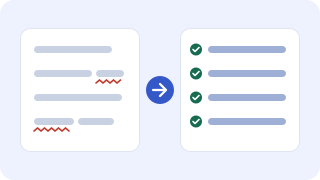
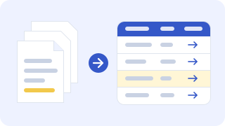
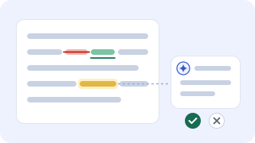

Wobei KI Sie im Forschungsalltag unterstützen kann
Drei Aufgaben, die wir im Workshop gemeinsam ausprobieren: Die KI übernimmt die Fleißarbeit, Sie prüfen und entscheiden.

Literatur prüfen
Der Agent gleicht Ihr Literaturverzeichnis mit den Vorgaben ab, ergänzt fehlende Angaben und markiert, was Sie nachprüfen sollten.

Ergebnisse strukturieren
Aus mehreren Studien oder Berichten entsteht eine Übersicht der relevanten Befunde – jeweils mit Fundstelle, damit Sie jede Angabe nachprüfen können.

Texte überarbeiten
Der Agent schlägt Änderungen für einheitliche Begriffe, Konsistenz und Stil vor. Jede Änderung bleibt sichtbar, und Sie entscheiden, was übernommen wird.
Über den Workshop
Agentische KI kann mehr als einzelne Prompts beantworten: Sie kann umfangreichere Aufgaben planen, Dateien und Werkzeuge einbeziehen, mehrere Arbeitsschritte ausführen und Ergebnisse anhand vorgegebener Kriterien überprüfen. Im Workshop lernen die Teilnehmenden diese Arbeitsweise praktisch kennen und setzen sie auf typische Aufgaben aus dem Forschungsalltag an.
Gearbeitet wird auf dem eigenen Laptop mit Claude Code in Visual Studio Code. Kurze Inputs wechseln sich mit angeleiteten Übungen, Reflexionsphasen und der Entwicklung eines eigenen wiederverwendbaren Skills ab.
Ziel: KI-Literacy für die Forschung
Der Workshop zielt nicht nur auf die Bedienung eines Werkzeugs. Die Teilnehmenden sollen agentische KI verstehen, angemessen einsetzen, kritisch bewerten und kontrollieren können.
Verstehen
Funktionsweise, Handlungsspielräume und Unterschiede zwischen Chatbots, Assistenten und agentischen Systemen einordnen.
Anwenden
Geeignete Forschungsaufgaben auswählen, klar formulieren und in überprüfbare Schritte zerlegen.
Bewerten
Ergebnisse, Quellen, Änderungen und Schlussfolgerungen systematisch auf Qualität und Plausibilität prüfen.
Verantworten
Datenschutz, Vertraulichkeit, Transparenz und gute wissenschaftliche Praxis bei der Nutzung berücksichtigen.
Inhalte und Übungen
- Grundlagen agentischer KI und Aufbau eines agentischen Harness
- Arbeiten mit Claude Code in Visual Studio Code
- Aufgaben sinnvoll beschreiben, eingrenzen und kontrollieren
- Literaturverzeichnisse prüfen und nach Vorgaben formatieren
- Relevante Ergebnisse in Dokumenten identifizieren und strukturieren
- Wissenschaftliche Texte überarbeiten und auf Konsistenz prüfen
- Änderungen nachvollziehbar machen und Ergebnisse verifizieren
- Eigene Skills für wiederkehrende Forschungsabläufe erstellen
- Grenzen, Fehlerquellen, Datenschutz und wissenschaftliche Verantwortung
Was die Teilnehmenden anschließend können
- geeignete und ungeeignete Einsatzfelder agentischer KI unterscheiden,
- Claude Code kontrolliert auf lokale Forschungsdateien anwenden,
- komplexere Aufgaben in transparente Teilschritte überführen,
- eigene Qualitätskriterien und Kontrollpunkte definieren,
- einen einfachen Skill erstellen, testen und weiterentwickeln,
- KI-Ergebnisse kritisch prüfen, statt sie ungeprüft zu übernehmen.
Vorläufiger Ablauf
Agentische KI, Claude Code, Sicherheit und Arbeitsweise
Recherche, Literatur, Textüberarbeitung und Konsistenzprüfung
Wiederverwendbare Anweisungen für individuelle Forschungsabläufe
Qualitätssicherung, Grenzen und Einsatz im eigenen Arbeitsalltag
Anmeldung
Die Anmeldung läuft über ein Online-Formular und dauert etwa drei Minuten. Es gibt maximal 12 Plätze, die in der Reihenfolge der Anmeldungen vergeben werden.
- Formular ausfüllen – Sie erhalten direkt eine Eingangsbestätigung per E-Mail.
- Ist der Workshop ausgebucht, kommen Sie auf die Warteliste und werden benachrichtigt, sobald ein Platz frei wird.
- Vor dem Workshop erhalten Sie die Teilnahmebestätigung und Hinweise zur technischen Vorbereitung.
Das Formular läuft auf dem LimeSurvey-Server des IMIS an der Universität zu Lübeck. Wir erfassen nur die Angaben, die wir für Organisation und Vorbereitung benötigen, speichern Ihre IP-Adresse nicht zusammen mit Ihren Angaben und geben Ihre Daten nicht weiter. Details stehen in den Datenschutzhinweisen im Formular.